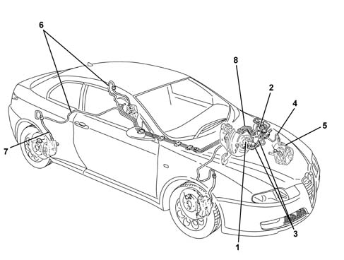

3340B ABS SYSTEM PIPES
- Path
- Descriptions > 33 BRAKING SYSTEM > 3340 ANTI-LOCK BRAKE SYSTEM (ABS) > 3340B ABS SYSTEM PIPES
- Kind
- system description
- Applies to
- all engines; all production periods
- Interactive page
- https://sloeber94.github.io/elrnDB-aGt/en/#/125000354
Applies to: all engines; all production periods
CONSTRUCTION FEATURES
GENERAL VIEW

1 - Brake pump
2 - ABS control unit
3 - Piping from brake pump to ABS control unit
4 - Rigid pipes from control unit to flexible front brake pipes
5 - Flexible front pipes
6 - Rigid pipes from control unit to flexible rear brake pipes
7 - Flexible rear brake pipes
8 - Rear brake pipe guard
ABS system pipes may be divided into three sections:
- pipes from the brake control pump to the ABS control unit. On versions with VDC, these are bigger in diameter and include a flexible Titaflex section
- rigid pipes frm the ABS control unit to the front and rear brake connection hoses. The rear brake control pipes are divided into two sections for installation purposes. Sections exposed to the risk of damage are protected by a special guard;
- hoses connecting rigid pipes and brake calipers.
The rigid pipes and hoses are anchored to the body by means of brackets and/or fastening clips.